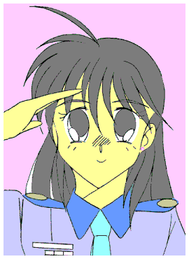

三陸沖上空
青空の中を一機の対潜哨戒機が飛んでいた。
「管制、こちら関東防空部隊のＰ３−Ｊ。目標は深度１５００フィートの海中を約３０ノットで北上中。現在のところ目的地は不明」
「管制よりＰ３−Ｊへ、引き続き追跡を続行せよ。それから周囲への警戒を怠るな」
「Ｐ３−Ｊ、了解」
対潜哨戒機Ｐ３−Ｊは、先程相模湾沖に侵入してきた戦闘機群が発進した海域より移動中と思われる潜行物体を追跡していた。
「逃がすなよ。敵の本拠地を突き止めるチャンスなんだからな」
「誰が逃がすか！！ それにしても信じられねえな。全長１７００フィート（約５００メートル）近い潜水艦が存在するなんて……」
「……機長！！」
「どうした？」
「目標が速度を落としました。それから海底より浮上する別の物体を探知。
……現在の深度は約３０００フィート、大きさは…………推定で３５００フィート以上！！」
「な……何だと！？」
超装甲機動兵器ライトニング５
作：ライターマン
５日後の国防軍横田基地
ブリーフィングルームは異様な緊張感に包まれていた。
集められていたのは、横田基地をメインベースとする特殊機動部隊の他……関東、東北、東海、四国、九州、そして北海道の戦闘および作戦指揮官であった。
「……以上説明しましたように、『エネミーＱ』は全長１２００メートル以上の巨大な潜行物体を本拠地にしているものと思われます」
プロジェクターに映し出された画像をまじえながら、榎本加代子（えのもと・かよこ）少尉が説明を続けている。
そしてその横では、特殊機動部隊の司令である防人巌(さきもり・いわお)大佐と作戦指揮担当の弓削正義（ゆげ・まさよし）大尉、そして国防軍のシンボルとなっている人型機動兵器ライトニングの操縦者である沢木響子（さわき・きょうこ）大尉が座っていた。
「現在までの観測と協力者の供述により、当該潜行物体は円盤状の中枢・生産ユニットを中心として、４隻の戦闘ユニットが合体した十字型の形状であり、侵攻時には１隻ないし２隻の戦闘ユニットが分離して行動することが判明しています」
そう言いながら榎本が操作をすると、正面のモニターにコンピュータグラフィックスのイメージ画像で手裏剣のような形の物体が分離したり合体したりする様子が映し出される。
出席した指揮官達の間から、どよめきともため息ともつかない声が上がった。
榎本の説明はさらに続く。
「現在この潜行物体は、日本海溝の最深部、深度約７０００メートルの地点に潜ったまま動きを見せていません」
「深度７０００メートル……！！」
ブリーフィングルームに、またもどよめきが起こる。
ごく一部の調査用深海潜水艇を除いて、大抵の潜水艦は実用限界深度は１０００メートル前後。２０００メートル以上潜れば水圧で潰れてしまう。
つまり、既存の潜水艦では攻撃どころか近づくことも出来ないのである。
「日本政府は現在、潜行物体に対してあらゆる周波数で呼びかけていますが、今のところ応答は全くありません。
よって、政府は３日後の午前０時を期限として、それまでに何らの反応もない場合、国防軍による総攻撃を行なうことを決定しました」
最後にそう付け加えて、榎本は説明を終えた。
ブリーフィングルームに集められた人々は総攻撃の参加予定の部隊の指揮官であり、その決定自体は既に伝えられている。
それでも実際に「総攻撃」という言葉を聞いたとたん、部屋の中は緊張のあまり水を打ったように、シン……となった。
「それでは作戦内容について説明する。まず第一段階として……」
榎本と入れ替わりに、特殊機動部隊の弓削が壇上に上り、本拠地攻略作戦の説明を始めた。
弓削の説明を聞きながら、響子は今までのことを振り返っていた。
エネミーＱ——
目的不明、正体不明、正式名称すら不明の謎のテロリスト集団が日本に対する破壊活動を始めたのは、今から３年程前である。
「彼ら」はどこからともなく現れ、戦闘機等による爆撃を行い、何処ともなく去っていく。そしてこの行為を３週間から２ヶ月の間隔で繰り返していた。
日本政府はこのテロリスト集団の正体を突き止めようとしたが、今まで一度も犯行声明を出したことがない彼らの正体はいまだ不明。
そこで政府はテロリスト集団を便宜上「エネミーQ」と呼称することとし、自衛隊を再編して国防軍を組織し「エネミーQ」迎撃の任にあたらせた。
だが、「エネミーQ」は人型機動兵器「凶戦士」を保有しており、最近までは苦戦の連続であった。
「凶戦士」はマッハ１近い速度で空を飛び回る高機動性と、いろんなオプション兵器を自在に扱える器用さを持ち、その装甲はバルカン砲程度ではびくともしなかった。
特別作戦室長であった防人は、状況を打開するために「凶戦士」の奪取を計画し、これを成功させた。
だが、これが一人の若者の運命を大きく変える事になった。
響子は「エネミーQ」の出現と、それに続く戦いにより２つのものを失った。
１つは自分の両親。そしてもう１つは自分自身の肉体……
４ヶ月前、彼女……いや彼は、迫水恭平(さこみず・きょうへい)と言う名前の……「男性」だったのだ。
ハッカーの経験を持つ優秀なコンピュータエンジニアだった恭平は、両親を「エネミーQ」の爆撃で失った事をきっかけに国防軍に入り、戦闘機パイロットになった。
そして防人に要請された彼は、鹵獲した「凶戦士」の解析プロジェクトに参加し、その起動方法を探っていた。
「凶戦士」はパイロットの識別に遺伝子をそのまま使用しており、その起動は困難を極めた。
そして起動できぬまま敵襲を受けた恭平は、操縦システムのAIに「戦闘により肉体と遺伝子に損傷を受けた」と説明して機動兵器の起動、および敵の撃退に成功した。
だがその直後、コクピット内の治療システムが作動して恭平の肉体および遺伝子の「修復」を開始した。
そのため２７歳だった恭平の肉体および遺伝子は、本来のパイロットである１７、８歳の少女のものになってしまった……。
鹵獲した人型機動兵器は、イメージを一新するためにカラーリングを白地とブルーを組み合わせたものにされて「ライトニング」と名付けられ、そして迫水恭平は、女性パイロット「沢木響子」として生きることになったのである。
国防軍がライトニングの起動および運用に成功すると、それまでの状況に変化が生じた。
それまでの「エネミーQ」の攻撃目標は無秩序だったのだが、ライトニングを標的にすることが多くなったのだ。
一度囮の戦闘機を迎撃するライトニングが狙撃されそうになったが、このとき「凶戦士」と戦闘機を射出した戦闘ユニットと、それが海中に潜る様子が目撃された。
そこで国防軍は、日本近海に定置ソナーブイを大量に配置して海中の移動物体を監視した。
そしてつい先日行なわれた戦闘の後、海中を移動する戦闘ユニットの追跡に成功して本拠地が突き止められたのである。
「……以上が今回の作戦の概要である。何か質問は？」
弓削は作戦内容の説明を終え、質問を促す。
指揮官の一人が手を挙げ起立した。
「東海地区の本郷です。説明では３つの段階の攻撃をもって攻略するとありますが、この内容では第二段階の攻撃で、ライトニングがかなりの危険にさらされるのではないのですか？」
「確かにそのとおりだ。だが先程榎本少尉が説明したように、敵の本拠地は４隻の戦闘ユニットが周りを囲むようにして防御している。これを攻略するには本拠地のほぼ真上から攻撃を行い、２ないし３隻の戦闘ユニットを行動不能にする必要がある。
……そしてそれが出来るのは、ライトニングを使用したこの方法しかない」
弓削がそう断言すると、質問をした士官は黙って着席した。
次に別の指揮官が手を挙げた。
「九州地区の結城です。今回の作戦における『凶戦士』対策はどうなっていますか？」
「この場にいる者は知っているように、現在までに確認されている『凶戦士』は全部で４体。うち１体は我々の手にあり、２体は撃破済みである。残りは１体だが、運がよければ第二段階の攻撃で戦闘ユニットと一緒に行動不能になるだろう。
……そうでない場合に対しては、第三段階の攻撃時、対『凶戦士』用の特殊塗料弾を装備した戦闘機を待機させ、『凶戦士』出現時には特殊塗料を塗布して行動の自由を制限する。これで『凶戦士』を撃墜できる訳ではないが、その後ライトニングが牽制する事により、それ程の脅威にはならないと考えられる——」
「ですが、もし未確認の『凶戦士』が存在したら……」
「その可能性は極めて低いと思う。なぜなら、『凶戦士』が４体しかいなかったのは機体を量産できないのではなく、操縦する技能を持つ者が４人しかいなかったからだ」
そこまでしゃべり、防人の方を見る弓削。防人はそれに対してゆっくりとうなずく。
「……これは協力者の供述からの推測だが、『凶戦士』の操縦は手足を使った操作の他、音声コマンドによるＡＩへの指示、そして各種武装を臨機応変に使いこなせるだけの判断力が必要となる。それには相当の訓練と習熟期間が必要だが、『エネミーQ』の一般兵士にはそれだけの時間は与えられていない」
「時間が与えられていない……それはどういう事ですか？」
「『エネミーQ』の一般兵士はクローン培養により１４、５歳の体になるまで眠ったままカプセルの中で育ち、目覚めてから３週間から２ヶ月で出撃する。
……『時間が与えられていない』というのは、そういうことだ」
「…………」
弓削の言葉がその場の全員に与えた衝撃、それはその日最大のものだったかもしれない。
ブリーフィングルームでの作戦会議の翌日、響子はライトニングのコクピットにいた。
作戦の開始は２日後だが、ライトニングは準備のため２時間後に出発することになっている。
コクピットの中でシステムや機体の状態をチェックしながら、響子は考えていた。
（このライトニングのために、俺は女になってしまった……）
（でも、戦況は大きく変わりつつある。今度の作戦がうまくいけば、「エネミーQ」との戦いも終わる）
（戦いが終われば……俺はどうするのだろう？）
（おそらく俺はライトニングを降り、軍を辞めることになるだろう。戦争が好きな訳じゃないのだから……）
（だけど昔の職場に戻る訳にもいかない。こんな体になってしまっては……）
（そう、この戦いが終わった後も俺の体は女のままだ…………俺に「女」として生きることが……出来るのだろうか？）
（俺はクレイと名のるあの少女に、「自分の生きる意味を、目的を見つけろ」と言った）
（戦いが終わった後の俺の生きる意味、生きる目的、俺のやりたいこと、俺の…………）
突然コクピットを降りて格納庫から出ようとした響子に、整備員が声をかけた。
「沢木大尉、どこへ行かれるんですか？」
「すまない。出発までには戻る」
ライトニングの出発直前、弓削はライトニングの格納庫に向かっていた。
今回の作戦では、第二段階でライトニングが行なう攻撃が重要な意味を持つ。
だがこのとき、ライトニングが一機で攻撃を行なうことになるため、かなりの危険にさらされることになる。
最初、第二段階の攻撃案として響子よりこの戦法を提案されたとき、弓削は頑強に反対した。
あまりにも危険で、ライトニングおよび響子が無事に済むとは思えなかったのだ。
しかし、他に有効な方法を出すことが出来なかったため、不承不承この戦法を採用することにしたのである。
（もしかしたら……）
響子はこの戦闘で、「エネミーQ」と刺し違えようとしているのではないか……？ と、弓削は思った。
弓削は先日、響子が「エネミーQ」そしてライトニングのために両親を、そして自分の本来の肉体を失った事を知った。
もし響子が「エネミーQ」との戦争を終わらせようと強く望み、戦いの終わった世界で自分のいる場所を見つけられないとしたら……そう思うと、弓削の心の中に漠然とした不安が広がっていった。
ライトニングの格納庫に到着した弓削だったが、そこに響子の姿はなかった。
整備員に聞くと、しばらく前にどこかに行ったのだと言う。
どこに行ったのだろう？ そう思って待っていると、やがて響子が小走りをしながら現れた。
「あ、弓削さ……いえ弓削大尉、どうしましたか？」
作戦準備中なので、階級つきで弓削の名前を呼ぶ響子。
それに対し、弓削は少々うろたえて、
「い、いやその…………出発前に君に会っておきたくて……。そ、そのつまり……し、心配で…………」
「……」
弓削の言葉を聞いた響子は、少しの間きょとんとして……「プッ」と吹き出した。
「——っくく。駄目じゃないか、もっと指揮官らしくしないと。
大丈夫、俺は必ず戻ってくる。……幸運の御守りもあることだし……な」
耳のあたりの髪をかきあげる響子。そこにはピアスが——以前弓削が響子に贈ったあのピアスが光っていた。
それを見た弓削は、思わず響子を抱きしめた。
「沢木君……必ず、必ず無事に帰ってきてくれ。帰ってきたら——」
「おっと、その先は作戦終了後にしようぜ。……今は作戦の成功に全力を尽くさなきゃ」
そう言って弓削から離れる響子。弓削はうなずくと響子に対して敬礼をした。
「沢木大尉、作戦の成功に全力を尽くせ。そして……必ず帰還せよ！！」
「了解！！」
弓削に答礼を返した響子はコクピットに乗り込み、１０分後には目的地に向かい横田基地を発進した。

２日後
「最後通牒の回答期限を経過。目標からの応答、ありません」
オペレータからの報告に防人はうなずき、マイクを持って全軍に向かって喋り始めた。
「諸君、作戦を始める前に言っておきたいことがある。
我々軍人にとって最大の使命は『戦わないこと』である。これは一見矛盾しているようにも見えるが、戦争を始めるには一発の銃弾でも十分なのに対し、終わらせるには多大な時間と人命が必要であることを考えれば、どちらが重要かは明白である。
それでも戦いが始まってしまった場合、我々はこの手が血塗られたものになったとしても速やかに戦いを終わらせなければならない。そして戦ったことが正しかったかどうか、それは『いかに戦ったか』ではなく『生き残った人々がどのように生きていくか』によって決まると私は考える。
だから私はこれより危険な作戦に赴く諸君らに、あえてこう命令したい。『死ぬな』、『必ず生きて帰れ』。…………以上だ」
防人の側に立っていた弓削はその言葉に大きくうなずき、マイクを受け取ると全軍に伝えた。
「これより作戦を開始する」
弓削の命令により、海上に配置された複数の駆逐艦から機雷が１００発近く、３分間隔で投下された。
投下された機雷には小さな羽根があり、その傾きを変えることにより沈降する速度と方向を調節することが出来た。
機雷群は一つの塊になり、敵本拠地の中枢ユニットと戦闘ユニットとの接合部に向かっていく。
そして目的の場所に到達した瞬間、
ガガガガ————ンッ！！
タイミングを合わせて機雷群がいっせいに爆発した。
この戦法を立案した弓削の考えはこうである。
深度６〜７０００メートルの海中で行動するには、水圧が最大の障害になる。
国防軍の所有する潜水艦では近づくことすら出来ないが、敵の方もそれ程自由に行動出来ないと考えられた。……なぜなら、帰還した戦闘ユニットと中枢ユニットとのドッキングをわざわざ海面近くまで浮上して行なっているからである。
そして超高圧の水圧下では、船体の一部に少しでも亀裂が入ればそこに全水圧がかかり、亀裂が広がって圧壊する。
それを防ぐためと迎撃のために、敵本拠地は必ず浮上してくるはずだ……と
「目標の位置に変化。……浮上しています」
最初の爆発から約３０分。敵本拠地は弓削の思惑どおりに浮上を開始した。
「よし、目標の深度が３０００メートルになるまで位置を合わせて現在の攻撃を継続。それから待機中の爆撃機部隊第一陣に発進を指示」
「了解」
弓削は攻撃の継続と、新たなる攻撃のための指示を与える。
敵本拠地は狙いを外すためにゆっくりと回転しながら浮上しているため、直撃はなくなったものの、至近距離での爆発は船体にかなりの負荷をかけているはずだった。
そして敵本拠地の深度が３０００メートルを切ったとき、駆逐艦はそれまでの海域から全速力で離脱し、代わりに到着した爆撃機が低深度用に大型化した特殊爆雷を使用して同様の攻撃を続けていった。
攻撃開始から２時間を経過した頃、敵本拠地はついに海面上に姿をあらわした。
爆雷を投下していた爆撃機は、最後に搭載していた全ての爆雷の起爆方式を連動指揮から単独指揮に切り替えて投下し、本土方面へと機首を巡らせた。
爆撃機が飛び去ろうとした方角を向いていた戦闘ユニットの装甲の一部が展開し、中からブラスターの砲身があらわれた。
砲身が爆撃機に狙いをさだめ、まさに発射しようとしたその瞬間——
バリバリバリッ・・・・・・ドカ————ン！！
真上から１本の光条が襲いかかり、大音響と共に戦闘ユニットの動力部が爆発した。
−「目標に命中を確認」
ＡＩより報告が入り、拡大映像がモニターに表示される。
それを見た響子は次の指示をAIに出した。
「……よし、続いて第二射発射準備」
−「了解。全エネルギーをバスター砲に注入、チャージ開始」
ライトニングは敵本拠地の直上６０００メートルの位置にいた。
全身を電波吸収塗料で黒く塗られ、右手に、というより全身で５０メートルの超巨大ブラスターを構えていた。
それは対戦闘ユニット用に開発されていたものである。以前、「凶戦士」を倒したときに使われていたものより遥かに威力があり、しかも高効率のエネルギーコンデンサを搭載したタイプだ。
しかしそれでも、エネルギーのチャージはライトニングのフルパワーで１分近くかかる。
そこで国防軍は、３００メートル級の飛行船二機を横に並べて連結させ、その中心部にライトニングを固定させた。そのおかげでライトニングによる今回の攻撃が可能になったのだが、代わりにライトニング自身は身動きが取れなくなっていた……
敵本拠地の残りの戦闘ユニットは、センサーを稼動して発射位置を探っていた。
ライトニングと飛行船は電波吸収塗料のおかげでしばらくは見つからずにすんでいたのだが、フル稼働のジェネレータやバスター砲から発する熱を隠すことができず、ついに赤外線センサーに探知された。
敵本拠地は攻撃可能なブラスターを使用して、ライトニングに攻撃を開始した。
だが、それとほぼ同時にライトニングのバスター砲のチャージが完了した。
「……発射！！」
響子の声と共にバスター砲から眩い光が発射された。
衝撃でライトニングの機体が震える。だがその狙いは外れることなく、閃光は二隻目の戦闘ユニットを貫いた。
二隻目の戦闘ユニットの破壊に成功したライトニングだったが、その直後、生き残った敵のブラスターから放たれた光が飛行船の端を貫いた。
「しまった！！ 飛行船との接合部をパージ！！ 急げ！！」
被弾したことを知った響子は、飛行船を急いで切り離した。
飛行船を使用した攻撃のもう一つの問題……それは、ライトニングを持ち上げるための揚力を得るために飛行船内にヘリウムガスではなく水素を充填していることであった。そのため——
ドド——ンッ！！
ライトニングが離れた瞬間、大音響と共に飛行船は爆発した。
−「現在自由落下中。スラスター稼動の必要あり」
「くそっ、何とかあと一隻……非常事態システム起動、キーワード入力」
響子はそう言って、操作パネルのキーボードをすばやく叩いた。
「動力のリミッターを解除、フルパワーでバスター砲にエネルギーを送れ！！」
響子が指示を出すと、メインとサブのジェネレータがそれまでよりも大きな音を出し始めた。
クレイと名のる「エネミーＱ」の少女は、響子と榎本との対話の中で少しずつ心を開いていった。
そして彼女の供述により得られた情報の中に、「凶戦士」の「非常事態システム」と、ライトニングでそれを使用するためのキーワードがあった。
「非常事態システム」とは、通常の性能では対処できない事態に陥ったとき、主に現場からの脱出を目的として一時的に機体制御のリミッターを外すシステムである。
このシステムでリミッターを外すことにより、ジェネレータの出力を最大７０パーセントアップすることができる。だがそれはジェネレータに過大な負荷をかけ、終了後の能力の低下、最悪の場合はジェネレータの爆発という事態もありうる両刃の刃でもあった。
飛行船の爆発から３０秒後、ライトニングの高度は２０００メートルを切っていた。
−「バスター砲のチャージ完了まであと３…２…１…完了」
「発射！！」
バスター砲から３度目の光が発射され、３隻目の戦闘ユニットに命中する。
発射の反動でライトニングの機体が大きく揺さぶられるが、響子は何とか体勢を立て直すと、バスター砲をパージしてスラスターを稼動する。
ジェネレータ付近の装甲が一部スライドし、中から蒸気が吹き出した。
−「非常事態システムを終了。現在動力部の冷却のため出力を通常時の５０％にダウン」
ＡＩの報告を聞きながら、響子はスラスターを操作して敵の砲撃を避け、破壊した戦闘ユニットの上に降り立った。
そしてセンサーを使って中枢ユニットへの入り口を捜す。そこにＡＩから新たな報告が入った。
−「左後方より当機に向けてレーダー波の照射と熱エネルギーの増大を感知」
「なにっ！？」
響子は慌てて回避行動に入ろうとした。だが時既に遅く、発射されたブラスターの光はライトニング左腕の上腕部から先を吹き飛ばす。
ライトニングを襲った光の発生源。それは響子がまだ「迫水恭平」だった頃、初めてライトニングを操縦して撃退したあの「凶戦士」であった。
（つづく）
おことわり
この物語はフィクションです。劇中に出てくる人物、団体は全て架空の物で実在の物とは何の関係もありません。
Ｐ３−Ｊなんて飛行機あったっけ？ なんてツッコミもしないで下さい。Ｐ３−Ｃ対潜哨戒機の後継機種のつもりで作ったでっち上げです。
あとがき
どうも、ライターマンです。
え？ おまけは？ と期待された方、すいません。今回は続き物なのでおまけは無しです。
今回は「燃え」ばっかりになってしまい、「萌え」がほとんどありません。まあ、決戦ですのでそこは勘弁してください。
さて、被弾してしまい左腕を失ったライトニングに襲いかかる「凶戦士」。響子はこれに対しどう立ち向かっていくのか？
「エネミーQ」の、そして中枢ユニットの中で指示を出す「カーネル」の正体とは？
作戦の成否は？ そして戦いの果てに彼らを待ち受けるものとは？
次回いよいよ最終回（たぶん）！！ 乞うご期待！！ ……してくれるといいな。
□ 感想はこちらに □